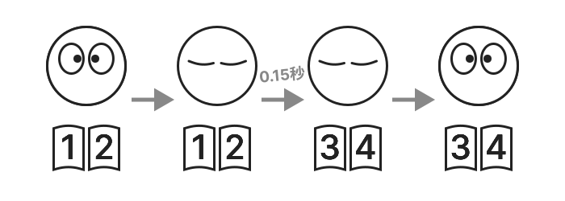
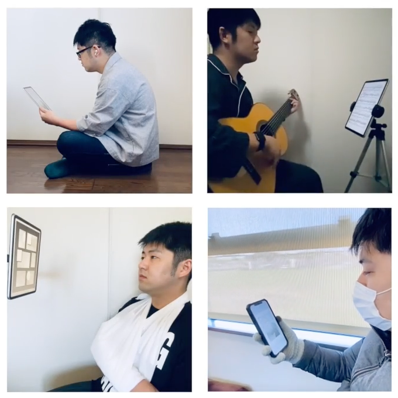

FlipByBlink
Додаток для електронних книг, який дозволяє перегортати сторінки простим морганням


Огляд.
Лише одна спеціальна функція. Це додаток для iPhone та iPad, який дозволяє перегортати сторінки, моргаючи закритими очима протягом свідомо трохи більшого періоду часу.
За винятком вищезазначених функцій, це простий і поширений додаток для читання електронних книг.
Як працює перегортання сторінок

Трохи подовжене закрите повіку призводить до того, що сторінка пересилається вперед, і до того моменту, коли ви відкриєте очі, ви вже перейдете на наступну сторінку. Звичайне миготіння не призводить до перегортання сторінок.
Моргання фіксується вбудованою камерою та датчиками пристрою.
Як і в більшості програм для читання електронних книг, ви також можете перегортати сторінки, торкаючись або проводячи пальцем по екрану.
Формат електронної книги.
- Тільки для книг з фіксованою версткою. (Наприклад, паперові книги, конвертовані безпосередньо в електронні, манга і т.д.)
- Підтримує імпорт PDF-файлів.
Варіант використання
- Загальне читання
- Гра на музичному інструменті, дивлячись на ноти
- Приготування їжі під час перевірки книги рецептів
- Читання в поїздах та автобусах
- Читання для людей з обмеженими фізичними можливостями

Допоміжні пристрої
Використовує фреймворк Apple ARKit/FaceTrackingAPI для розпізнавання моргання. Для цього потрібна камера TrueDepth або чіп A12Bionic чи новішої версії.
⚠️ Непідтримувані пристрої
- iPhone
- 6s
- 6s Plus
- 7
- 7 Plus
- 8
- 8 Plus
- СЕ 1-го покоління
- iPad
- 5-е покоління
- 6-е покоління
- 7-е покоління
- Air 2-го покоління
- Mini 4-го покоління
- Модель Pro 9,7 дюйма
- Модель Pro 10,5 дюйма
- Модель Pro 12.9" 1-го покоління
- Модель Pro 12.9" 2-го покоління
- iPod touch
🚧 Експериментальні можливості (opt-in)
- Зміна часу, необхідного для перегортання сторінки (за замовчуванням 0,15 секунди)
- Функція повернення на одну сторінку одним підморгуванням очей
Технічні характеристики
Ціна
Безкоштовно
Купівля в додатку
Немає
Платформи
- iOS 14.7 і вище
- iPadOS 14.7 і вище